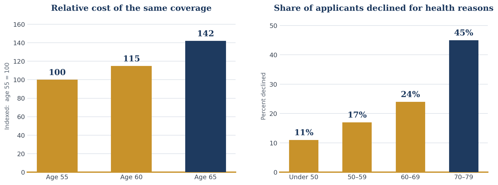

Long-Term Care Planning
Independent, carrier-neutral analysis by Withbert (Bert) W. Payne, CPA, CGMA, FCA
Whether your concern is the cost of care, protecting your family, or preserving your independence, one fact stays constant: long-term care planning works best while you still hold the greatest number of choices. Two of the things a plan depends on — price and insurability — are set by your age and your health on the day you apply, and neither one moves in your favor by waiting.
This page sets out the landscape as it actually stands today, the four facts that drive the decision, the order in which the questions should be answered, and the window in which most families have the widest set of options. It is a planning page, not a product page. The funding question comes last here, as it should.
Long-term care planning is most effective when it is done while you still have the greatest number of choices. Plan first, fund second. Settle who provides care, where it is delivered, and how the family will decide under pressure — then, and only then, decide whether to insure the risk, self-fund it, or do some of both. For most households the widest set of options is open between roughly ages 50 and 64.
will develop a significant long-term care need after 65, measured at the threshold that pays a claim
average duration of need among those who need care (3.1 years averaged across everyone)
California median annual cost of a private nursing home room
of adults aged 60 and over own a long-term care insurance policy
Sources: HHS Office of the Assistant Secretary for Planning and Evaluation, Long-Term Services and Supports for Older Americans (Johnson & Dey, revised 2022) and ASPE issue brief, January 2025; CareScout 2025 Cost of Care Survey, California statewide medians.
Two things have changed in the last few years, and a good deal of what is still circulating about both of them is out of date.
Washington State now has a public program that pays benefits. WA Cares is funded by a payroll deduction on Washington workers and began paying claims on July 1, 2026, with a lifetime maximum of $36,500, indexed for inflation. Measured against a California private nursing home room, that maximum covers roughly two months of care. It is a floor, not a plan.
California has no such program. The California Long Term Care Insurance Task Force created under AB 567 delivered its actuarial report in December 2023, held its final meeting that same month, and was repealed by its own statute, SB 1255, effective July 1, 2024. There is no California program, no payroll tax, and no enrollment deadline of any kind.
You may still encounter marketing that urges you to buy before a California mandate arrives, or to secure an exemption from a future payroll tax. There is nothing to be exempt from. The California Department of Insurance issued an Agent and Broker Alert on August 23, 2023 addressing exactly this practice, and the Washington exemption window — which required coverage in force before November 1, 2021 and an application by December 31, 2022 — closed permanently years ago. Anyone presenting you with a deadline is telling you something that is not true. Plan on the merits, on your own timetable.
Continue: State Long-Term Care Programs sets out what Washington actually pays, where the other states stand, and the full California record.
These are the numbers that decide how much coverage a household needs — and whether it needs any. Each is stated on its published source, and each has been corrected against the current data.
A private nursing home room in California runs a median $15,178 a month, or $182,135 a year. The Bay Area runs above the state median.
Dementia care commonly runs four to eight years from diagnosis, with a minority far longer. Across all causes, care lasts 5.4 years on average among those who need it.
56.4% of people turning 65 will develop a significant need, measured at the benefit trigger. The familiar 70% figure counts a broader definition of need.
Care paid out of a pre-tax retirement account has to be withdrawn gross. At the top combined rate, a dollar of care costs about two dollars of IRA.
The 70% figure that appears across this industry traces to a 2019 federal analysis that looked backward at people who had already died and counted every kind of severe need, including care provided unpaid by family. The current federal projection, for the cohort turning 65 between 2021 and 2025, is 56.4% — and it is measured at the threshold that actually pays an insurance claim: needing help with at least two activities of daily living for ninety days or more, or severe cognitive impairment. Both figures are honest. The lower one is the one to plan against, because it is the one a policy responds to.
This is the fact that a CPA sees and an insurance agent generally does not. If the plan is to pay for care out of an IRA, a 401(k), or any other pre-tax account, the money has to come out and be taxed before a single hour of care is paid for. The cost of care is not the number that matters. The gross withdrawal required to produce it is.
| Combined marginal rate (federal + California) | Gross withdrawal per $1 of care | Gross withdrawal to fund one year at $182,135 |
|---|---|---|
| 24% + 9.3% = 33.3% | $1.50 | $273,066 |
| 32% + 10.3% = 42.3% | $1.73 | $315,659 |
| 37% + 13.3% = 50.3% | $2.01 | $366,469 |
Illustrative only. Assumes the withdrawal is fully taxable and does not itself push the household into a higher bracket. California's 13.3% rate applies only above $1 million of taxable income. Figures do not reflect the itemized medical expense deduction, which can offset part of the cost where qualifying expenses exceed 7.5% of adjusted gross income — see Tax Advantages.
So the old planning shorthand — that self-insuring costs twice as much in a high bracket — is true, but only at the very top. At the combined marginal rate most retired California households actually face, it is closer to half again as much. Either way, the point holds and it is rarely priced into the decision: a household funding care from pre-tax accounts is not exposed to $182,135 a year. It is exposed to something between $273,000 and $366,000 a year of portfolio withdrawals, in a year when the portfolio may also be down. Assets held in a taxable account carry a capital gains cost instead; a Roth carries none. Which account pays the bill changes the arithmetic more than most families expect.
Of all the financial decisions people postpone, long-term care planning is among the most costly to delay. Unlike retirement saving, where a late start can be partly offset by contributing more, the consequences of waiting here compound in two directions at once — and one of them can become permanent.
Premiums rise with age, and the increase is locked in for the life of the policy.
A change in health can move you to a higher rate class — or out of the market entirely.
Every year without a plan is a year the whole risk sits on the household balance sheet.
The best time to plan was years ago. The next best time is today.

The pattern matters more than any single number. The same coverage bought at 65 rather than 55 commonly costs materially more every year for the life of the policy, and roughly one applicant in four is already being declined by their sixties. By the seventies it is closer to one in two. Cost is the visible penalty for waiting. Insurability is the one that cannot be undone — and it is worth knowing that a formal application that ends in a decline becomes part of your record and follows you to the next carrier. A preliminary underwriting review does not.
Continue: The Cost of Waiting on Long-Term Care Insurance sets out the age-banded premium tables, what waiting does to the size of the benefit pool, and the decline rates in full.
Many successful families tell me the same thing: we can afford long-term care. Perhaps. But writing a check is not the same as having a plan. A care event does not arrive as an invoice. It arrives as a decision — and the decisions come faster than most families expect.
Money pays the bill. Planning protects the family.
Continue: When “We Can Afford It” Isn’t the Right Answer works through the capital question in full — what self-funding actually requires, and when it is the correct decision.
Long-term care planning is often mistaken for nursing-home planning. It is not. It is about preserving comfort, independence, and choice for as long as those are possible. A facility is the last step, not the goal — and there is a great deal of life between remaining at home and that last step. Before any funding question is worth asking, every plan should answer three things, in this order:
A spouse, adult children, and professional caregivers each play a different role. Are they able? Are they willing? What will it ask of them?
Most people want to remain at home as long as they can. Aging in place is the objective; the plan exists to protect it for as long as possible.
Only once the first two are settled does funding become a real decision tied to a real goal.
Only after those questions are answered should insurance be discussed.
Once the first three questions are settled, the funding decision has its own order. Each step answers one question and narrows the next. Skipping to the last step is how households end up with a product that does not fit the plan.
| Step | The question it answers | Where it is set out in full |
|---|---|---|
| 1. The risk | How likely is a care event, how long does it last, and what does it cost here? | The Long-Term Care Risk Report |
| 2. The number | How much monthly benefit does this household actually need? | How Much Is Enough? |
| 3. The structure | Traditional, hybrid, asset-based, or annuity-funded? | Four Ways to Secure Coverage |
| 4. Insurability | Would this household qualify, and at what rate class? | Underwriting |
| 5. The funding | Which asset pays the premium, and what is the tax treatment? | Paying for LTC · Tax Advantages |
| 6. The review | Does coverage already in force still do what it was bought to do? | A complimentary policy review |
Not every family needs insurance to fund care. But families who could comfortably write the check often still choose to insure the risk, for reasons that have little to do with affordability:
Properly structured, a plan of this kind is not simply an expense. It repositions capital you already hold — which is why an independent review is worth having even when the answer turns out to be that you do not need coverage at all.
Based on hundreds of client reviews, the most favorable planning window generally falls between ages 50 and 64.
Best pricing and the widest range of options. Health qualification is usually straightforward, and inflation protection has the longest period in which to compound.
Still an excellent planning window. Premiums are higher than at 50, but the difference is not yet dramatic, and most health conditions can still be accommodated.
Urgency increases. Pricing rises more steeply and some carriers begin to limit their appetite for new applicants at these ages.
Fewer options and more underwriting challenges. Asset-based and hybrid designs may still make sense, but traditional coverage becomes progressively harder to obtain.
Long-term care planning is not about predicting whether you will need care. It is about preserving your independence, protecting your family, and retaining choices while you still have them. Whether you ultimately insure the risk or choose another funding strategy, the most important decision is to create a plan before circumstances create one for you.
My CPA Perspective
I am a CPA before I am an insurance broker, and it changes where I start. Most conversations about long-term care begin with a product. This one begins with a household balance sheet and an honest question about which assets would actually pay for care, in what order, and at what tax cost. Run that arithmetic and the answer is sometimes that the household should insure the risk, sometimes that it should carry it, and often that it should do part of each. For a household with enough capital that a decade of care for both spouses would not change the plan, self-funding is the correct decision and I will say so. What I will not do is let it be decided by default, or by a projection that quietly ignores what it costs to get money out of a retirement account. My compensation does not vary by carrier, by product, or by whether you buy anything at all.
The Long-Term Care Risk Report — the probability, the arithmetic, and whether you can afford to carry it yourself. · The Cost of Waiting — what a decade of delay does to the premium and to the benefit. · How Much Is Enough? — the method for arriving at your own monthly number. · Four Ways to Secure Coverage — the structures, compared. · Tax Advantages — federal and California treatment, including entity-paid premiums.
HHS Office of the Assistant Secretary for Planning and Evaluation, Long-Term Services and Supports for Older Americans: Risks and Financing (Johnson & Dey, revised August 2022) and ASPE issue brief, January 2025 · Administration for Community Living · CareScout 2025 Cost of Care Survey, published March 2026 (California statewide medians) · American Association for Long-Term Care Insurance, 2025 and 2026 Price Index · Alzheimer’s Association · California Department of Insurance, Agent and Broker Alert, August 23, 2023 · California SB 1255 (2024) · Washington State WA Cares Fund · Internal Revenue Code § 7702B and Rev. Proc. 2025-32 · California Franchise Tax Board, 2025 Schedule CA (540) instructions.
Complimentary · No Obligation
Your review is prepared personally by Withbert (Bert) W. Payne, CPA, CGMA, FCA — independent, carrier-neutral, and complimentary.
Request a Complimentary Review (925) 708-6501Already own a policy? Call for a complimentary review of the coverage you have.
This is a solicitation for insurance. This material is for informational purposes only and does not constitute personalized insurance, legal, tax, or accounting advice; consult a qualified professional regarding your specific situation. Insurance products and availability vary by state. Coverage is subject to medical underwriting and policy availability. Policy illustrations and hypothetical results are illustrative only and are not guarantees of future performance; results will vary based on individual health, age, carrier underwriting, policy design, and duration of care. Long-term care benefit payments reduce a policy’s death benefit and cash surrender value. Benefits are generally income-tax-free, subject to applicable tax rules. Tax figures shown are illustrative and depend on filing status, income, residency, and the year in question. Withbert W. Payne is a licensed insurance broker in California (CA License No. 0E90257). © 2026 Insurance Review Services · LTCCPAs.com. All rights reserved.